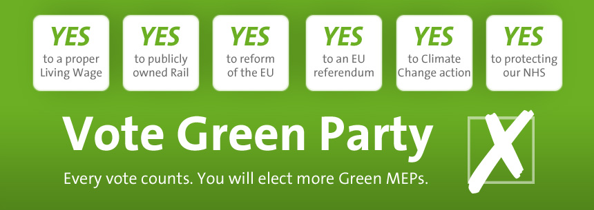

It’s the day before the European Election. Tomorrow you will have a chance to have your say on how Europe is run. Your vote is important and I urge you to use it.
Last time, in 2009, the Greens in the South West were 0.8% away from getting our first MEP elected. A small and perfectly achievable increase in our vote will get our lead candidate Molly Scott Cato elected, and we’ll get another Green voice in Europe.
Why is this important, and why should you care? Here are the key points:
- Green MEPs have the best activity level of all UK parties - they work hardest for you
- The Green Party is opposed to the TTIP, unlike all of the other main parties and UKIP. These trade talks undermine our democratic rights and market regulation.
- Greens work in Europe for you, not corporations. They are your best option for protecting your rights and safety at work
- Greens support a Financial Transactions Tax (the ‘Robin Hood Tax’) and restrictions on excessive pay
- Greens work tirelessly to protect your environment
- Green MEPs in Europe form a larger group than the groups Conservatives or UKIP belong to, and so your voice will be more powerful if represented by us.
You can read the manifesto here
You may be disillusioned with politics. I understand - there is little between the large parties. But this election uses PR, so you can vote for who you really want and know it will ‘count’. If you vote for the Green Party you know our MEPs will work hard within the European Parliament for you and for a better Europe.